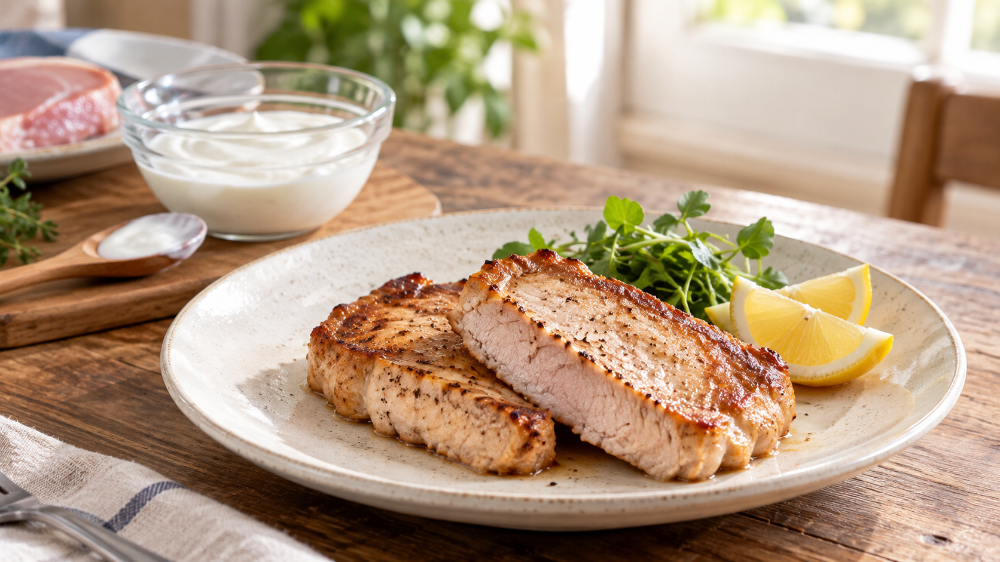

ヨーグルト漬けは、肉を「奥まで」やわらかくするわけではない
豚肉をヨーグルトへ漬けると、しっとり、やわらかくなる。
よく聞く話だが、ヨーグルトが肉の繊維を一晩で全部ほどいてくれるわけではない。変化が起きやすいのは、まず表面に近い部分だ。そして、肉の種類や漬ける時間が変われば、結果も変わる。
だから大事なのは「ヨーグルトなら何でもやわらかくなる」と覚えることではない。酸と時間が、肉のどこへ、どれくらい働くかを考えることだ。
今日の結論
豚ロースは無糖ヨーグルトに冷蔵庫で10〜12時間。焼く前に表面のヨーグルトを軽くぬぐい、厚さをそろえて火を通す。
ヨーグルトには乳酸があり、肉の表面を酸性側へ動かす。すると、筋肉を形づくるたんぱく質の並び方や、水を抱える状態が変わる。
ただし、やわらかさを決めるのは酸だけではない。肉には、カルシウムが合図になると筋肉の骨組みを切る酵素もある。これはカルパインという。ヨーグルトのカルシウムが、この働きに関わる可能性はあるが、家庭の漬け込みでどれほど寄与するかは、まだ酸の働きときれいに分けて言えない。
酸は、肉を溶かすのではなく、表面の状態を変える
肉は、細い筋肉の束と、それを支える結合組織からできている。
ヨーグルトに触れた部分では、乳酸によって酸性度が変わる。すると、たんぱく質同士の引き合い方が変わり、加熱したときの硬さや噛みごたえにも差が出る。
ここで「漬け汁が肉の中心まで一気に染み込む」と考えると、期待が大きすぎる。漬け込みは、液体と肉が接した場所から時間をかけて進む。厚い肉ほど中心との差が残りやすい。
たとえるなら、ヨーグルト漬けは分厚い本を一度に書き換える作業ではない。表紙に近いページから、少しずつ状態を変えていく作業だ。
研究では、豚肉の硬さが下がった。ただし、どの肉でも同じではない
ヨーグルトなどの発酵乳へ漬けた豚ロースの研究では、加熱後の硬さと噛みごたえが下がったことが確認されている。
ここから分かるのは、ヨーグルト漬けが豚肉の食感を変えうるということだ。ただし、この結果は長い漬け込みと低温調理を組み合わせたものだった。普通のフライパン調理へ、そのまま同じ大きさの効果が出るとは限らない。
別のヨーグルト由来の酸性ホエイを使った研究では、10〜15時間漬けた豚肉は切る力が小さくなった一方、5時間では明確な変化がなく、鶏肉のやわらかさも変わらなかった。
つまり、ヨーグルト漬けは魔法ではない。豚肉では変化が表れた研究があるが、時間が短すぎれば差が出ず、肉の種類が変われば同じ結果にならない。
家庭では、薄めの豚ロースを一晩ではなく10〜12時間から試すのが現実的だ。長く漬ければ必ず良くなるわけではなく、酸味が強くなったり、表面の食感が崩れたりすることもある。
今日の一皿：ヨーグルト漬けポークソテー
ヨーグルトの効果を過大に期待せず、厚さと火入れまでそろえる。にんにくと黒こしょうは香り付けであり、やわらかさの主役ではない。
材料（2人分）
- 豚ロース肉（厚さ1〜1.5cm） 2枚、合計約240g
- 無糖プレーンヨーグルト 80g
- 塩 2.4g
- おろしにんにく 3g
- 黒こしょう 少々
- 植物油 小さじ1
- レモン 2切れ
作り方
- 豚ロース肉は、厚い部分だけを手で軽く押し、全体をほぼ同じ厚さにする。脂身と赤身の境目へ2〜3か所切り込みを入れる。
- 保存袋へヨーグルト、塩、にんにく、黒こしょうを入れて混ぜる。豚肉を加え、全面へ薄く行き渡らせる。
- 袋を閉じ、必ず冷蔵庫で10〜12時間置く。室温には置かない。
- 肉を取り出し、表面のヨーグルトをキッチンペーパーで軽くぬぐう。漬け汁は再利用せず捨てる。
- フライパンへ油を入れて中火で温め、豚肉を並べる。片面を約2分焼いて焼き色を付け、返したら弱めの中火にする。
- ふたをして2〜4分焼く。最も厚い部分で中心温度75℃に達してから1分を目安に火を通す。肉の厚さや冷え方で時間は変わるため、見た目だけで決めない。
- 火を止めて2分休ませ、器へ盛る。レモンを添える。
焼く前にヨーグルトをぬぐうのは、発酵乳のたんぱく質や糖が先に焦げるのを抑えるためだ。すべて洗い流す必要はないが、白い塊が厚く残らないようにする。
日常へ広げるなら、「漬けだれ」より肉の厚さを見る
この考え方は、みそ漬け、塩こうじ漬け、酢を使うマリネにも使える。
漬けだれが働くのは、まず表面に近い場所だ。だから、同じ重さなら厚い塊肉より、厚さのそろった切り身のほうが変化を読みやすい。中心までやわらかくしたい料理では、漬け込みだけに任せず、繊維を断って切る、薄くする、加熱しすぎない、といった別の工夫も一緒に使う。
買い物では、砂糖や香料の入っていない無糖プレーンヨーグルトを選ぶ。甘いヨーグルトは焦げやすく、料理の味も大きく変わる。
そして、鶏肉を漬けたときに同じやわらかさが出なくても失敗とは限らない。研究でも肉の種類によって結果が違う。ヨーグルトは「万能な肉やわらか剤」ではなく、表面の食感と香りを整える選択肢の一つとして使うほうが、判断を誤りにくい。
まとめ
ヨーグルト漬けで起きる変化の中心は、乳酸による酸性度の変化だ。カルシウムで働く酵素もやわらかさに関わる可能性はあるが、家庭の漬け込みでの寄与はまだ切り分けにくい。
豚肉では食感がやわらかくなった研究がある。一方、短時間では差が出ず、鶏肉では変わらなかった研究もある。
だから覚えるのは、ヨーグルトそのものより三つの条件だ。
薄めの豚ロース。冷蔵庫で10〜12時間。焼く前に表面をぬぐい、中心まで火を通す。
漬け込みは肉のすべてを変える魔法ではない。表面から少しずつ変える道具だと考えると、使いどころが見えやすくなる。
参考文献
- Latoch A, et al. Physicochemical properties of pork loin marinated in kefir, yoghurt or buttermilk and cooked sous vide. Acta Sci Pol Technol Aliment. 2019;18(2):163-171. https://doi.org/10.17306/J.AFS.0642
- Simitzis P, et al. The Effects of Yoghurt Acid Whey Marination on Quality Parameters of Pork and Chicken Meat. Foods. 2023;12(12):2360. https://doi.org/10.3390/foods12122360
- Lian T, Wang L, Liu Y. A New Insight into the Role of Calpains in Post-mortem Meat Tenderization in Domestic Animals: A Review. Asian-Australas J Anim Sci. 2013;26(3):443-454. https://doi.org/10.5713/ajas.2012.12365
- U.S. Department of Agriculture, Food Safety and Inspection Service. How long can meat and poultry be marinated? https://ask.fsis.usda.gov/article/How-long-can-meat-and-poultry-be-marinated
- 食品安全委員会. 加熱による食中毒予防のポイント. https://www.fsc.go.jp/fsciis/attachedFile/download?fileId=110&retrievalId=kai20211201ik1
※この記事の家庭向け手順は、豚肉と発酵乳・酸性ホエイを調べた研究から導いた実用的な目安であり、肉の部位、厚さ、製品の酸性度、加熱方法で仕上がりは変わる。